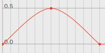

F-Curve Editor
If you haven't read the documentation about the Timeline and the Key Editor please read these sections first.
The F-Curve editor is a very powerful tool when it comes to fine tuning your animation. You should see the F-Curves of the selected object, tag or material if you've already recorded an animation. If you haven't recorded keys the view will be blank.
F-Curve Editor Controls:
Now lets start with the four main parts of the F-Curve editor as shown on the screenshot above.
- The parameters for which keys have been recorded. Only the F-Curves of selected parameters will be displayed in the F-Curve view. To select a parameter just click on it.
- The actual key.
- The left tangent of a key. This tangent is only visible if you use spline interpolation.
- The right tangent of a key. This tangent is only visible if you use spline interpolation.
Interpolation Types:
Cheetah3D currently offers four interpolations types. The interpolation type defines how the property values between the keys will be calculated.
|
|
Constant interpolation: This is no real interpolation type since no interpolation between two values happens at all. Cheetah3D just picks the value of the animation key on the left hand side. |
|
|
Linear interpolation: This is the most basic interpolation type. The parameter will change linearly (with constant speed) over the time. This is the default interpolation type in Cheetah3D. |
|

|
Smooth interpolation: The smooth interpolation type tries to create an smooth curve through the given keys. |
 |
Spline interpolation: The spline interpolation is the most powerful interpolation type because it allows to define an arbitrary Beziere curve between two keys. If you've chosen the spline interpolation type there will be also shown the tangents of the Beziere curves in the F-Curve Editor. To manipulate the tangents just drag them around with the mouse. |
Setting Interpolation Types:
To set the interpolation type of keys you first have to select them with the mouse. Selected keys will be highlighted in red. Now you just have to call the appropriate menu command for setting both tangents "Animation->Tangent->Type", to set the left tangent "Animation->Left Tangent->Type" or to set the right tangent "Animation->Right Tangent->Type". You can combine two different interpolation types arbitrarily.